호텔 고조회 릴스 · Watch와 OpenCV
호텔 탭 23건 중 보관 조회 5만 이상 13건. 실제 원본 13건, 육안 후보 경계 검토 10건.
기존 호텔 탭 · 원본 장면 바둑판 · 상세 기록 · 검증 수치
순위는 공개 탭이 보관한 조회수입니다. 원본에서 현재 재생수는 공개 확인하지 못했습니다. 0.1초 표는 첫 영상 PTS 기준으로 FFmpeg 파형과 OpenCV의 밝기·색·광류를 담습니다. 효과음 정체와 속도 변화는 미확인입니다.
보관 조회 427,808회 · 원본 게시 2026-05-16T17:51:49+09:00 · 원본 확인 2026-11-22T18:52:42+09:00 · DYY4d2LBQkK
Watch · 22장
26개 자동 후보 대조. 7.174/7.341/7.549/7.716초는 같은 창과 먼 풍경 앞을 다리 상부 구조물이 통과해 탐지된 후보. 0.959초 따뜻한 조명과 풀을 한 화면, 9.468초 손이 숲속 길을 가리킴, 11.428초 손잡이, 13.847초 청록색 풀과 곧은 수목 공개. 16.308초 수면 반사, 24.525초 풀 와이드, 26.068→26.944초 잎과 흐르는 물 근경. 작은 중앙 흰 영어 문구 관찰. 효과음 정체는 미확인.
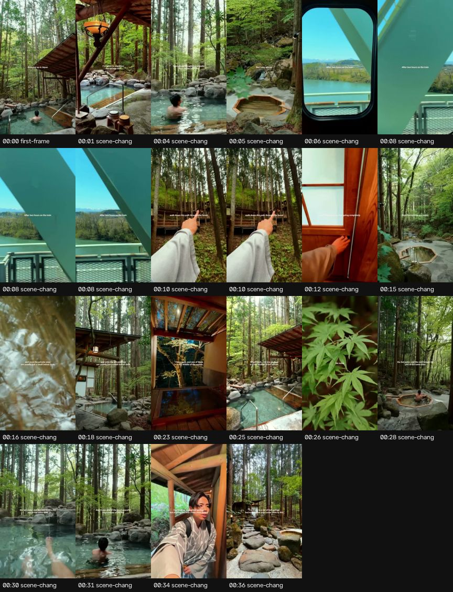
OpenCV · 374구간
자동 후보 26개 · 육안 하드컷 22 · 37.329초 · 895프레임.
0.1초 측정 CSV · 컷 후보 · 측정 설정
연출 가설 밝은 수면, 어두운 목재, 깊은 녹색 숲을 함께 등지고 손이나 문을 통과하면, 시선을 이끌면서 실제 그 장소에 도착하는 감각을 줄 수 있다.
보관 조회 328,095회 · 원본 게시 2025-11-14T19:42:51+09:00 · 원본 확인 2026-11-22T18:52:42+09:00 · DRCKrhSElbL
Watch · 22장
48 후보 좌·중·우 대조. 59.733초 Trip.com UI가 흰 원형으로 펼쳐지는 와이프, 59.967초 같은 인터페이스에서 프로모션 카드 영역만 바뀌므로 둘 다 영상 하드컷 집계 제외. 0.0초 증기 낀 온천마을 와이드, 4.133초 목재와 온천 공연, 24.200초 음식 상차림, 33.367~36.333초 파란 저녁 조명의 증기와 전망, 39.733~47.567초 방·발코니·탕·정원, 49.600~57.600초 저녁·면·조식에서 정원 산책으로 전환. 59.133초 실제 Trip.com 앱 화면을 편집에 삽입했으며 60.467초부터 화면에 Tokinoniwa 숙소 페이지가 보인다. 강조형 다색 중앙 발화 자막과 초반 제목 및 지명 사용. 배속·효과음 정체 미확인.
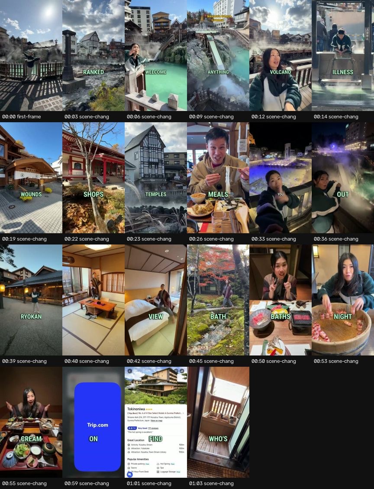
OpenCV · 645구간
자동 후보 48개 · 육안 하드컷 46 · 64.433초 · 1,933프레임.
0.1초 측정 CSV · 컷 후보 · 측정 설정
연출 가설 마을을 먼저 보여주고 음식·실내·입욕을 펼친 뒤 이미 화면에서 본 숙소를 예약 화면과 연결하면 여행과 예약 사이의 이동을 줄일 수 있다. 새 시리즈에서는 얼굴을 노출하지 않고 공간과 손·뒷모습에 적용한다.
보관 조회 297,922회 · 원본 게시 2024-07-12T20:50:49+09:00 · 원본 확인 2026-11-22T18:52:43+09:00 · C9UlLxWSLa2
Watch · 14장
0.0초 가족과 호텔 로비, 2.7초 침대, 5.4초 욕실 삽입, 8.1초 품목 목록, 10.8초 창문 앞 어린이, 18.9초 놀이 공간, 29.7초 시설 안내, 32.4초 도시 전망. 화면 글씨는 객실·이동·편의시설과 함께 바뀐다. 13개 후보를 육안 대조했고 7.667초는 같은 샷 안 품목 목록 삽입이므로 하드컷에서 제외했다.
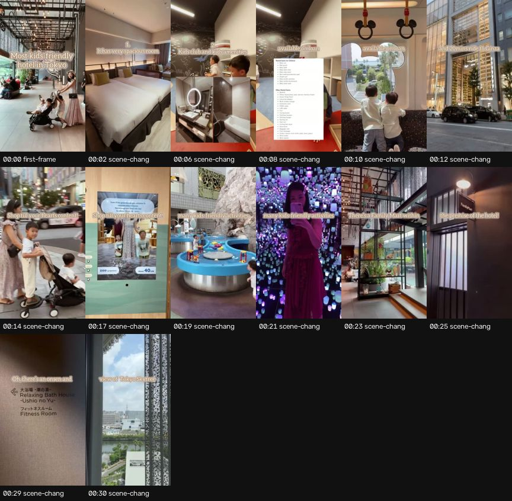
OpenCV · 325구간
자동 후보 13개 · 육안 하드컷 12 · 32.466초 · 974프레임.
0.1초 측정 CSV · 컷 후보 · 측정 설정
연출 가설 가족이 실제로 쓰는 공간과 창에서 보이는 풍경을 교차하면 숙소 크기와 편의가 구체적으로 전달될 수 있다.
보관 조회 134,246회 · 원본 게시 2025-10-03T00:00:08+09:00 · 원본 확인 2026-11-22T18:52:43+09:00 · DPT6R7wiJAz
Watch · 9장
7개 자동 후보 모두 하드컷. 0.1초 그리드 및 소스 F83→84 추가 대조에서, 자동이 놓친 3.360초의 침구와 잔→야외 탕 전환도 확인했다. 총 확인 8개. 1.200초 온천 수면에서 넓은 창틀과 정원, 2.280초 차잔과 침구로 시점 축소, 4.400초 방으로 전환. 4.960초 뒷모습으로 입구 접근, 8.240초 정원·수면 위 장소표, 9.840초 첫 구도로 회귀. 앞부분은 얇은 흰 영어, 후반은 별도 장소표. 효과음 정체 미확인.
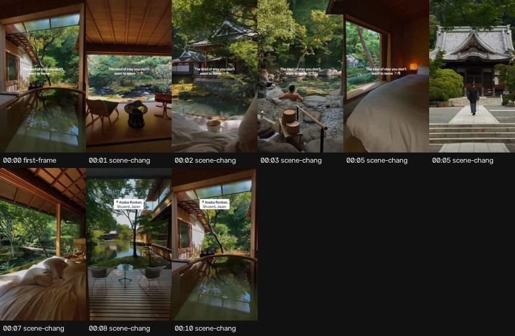
OpenCV · 115구간
자동 후보 7개 · 육안 하드컷 8 · 11.440초 · 286프레임.
0.1초 측정 CSV · 컷 후보 · 측정 설정
연출 가설 같은 정원을 창, 잔, 탕, 나무 데크에서 계속 다르게 보이면 한 숙소에서 머무는 체감이 생긴다. 정면 얼굴 없이도 여행자가 걸어가는 방향으로 시청자의 시선을 유도할 수 있다.
보관 조회 113,680회 · 원본 게시 2025-08-22T02:32:34+09:00 · 원본 확인 2026-11-22T18:52:43+09:00 · DNoB3-gJ4Kx
Watch · 22장
22 후보 전체 좌·중·우 대조. 0.0초 돌길 위 걷는 뒷모습에서 1.767초 료칸 창과 정원, 3.467초 따뜻한 병풍과 인물, 6.700초 녹색과 붉은 등, 8.367초 현관 다리를 걷는 전신 후면, 16.833초 따뜻한 상차림, 24.867초 목조 건물과 하천, 26.867초 창 너머 녹색, 28.400·29.633초 음식 근경. 39.000초 다시 길의 뒷모습, 40.733초 현관으로 회귀. 초반 작은 흰 영어 문구. 효과음 정체·배속 미확인.
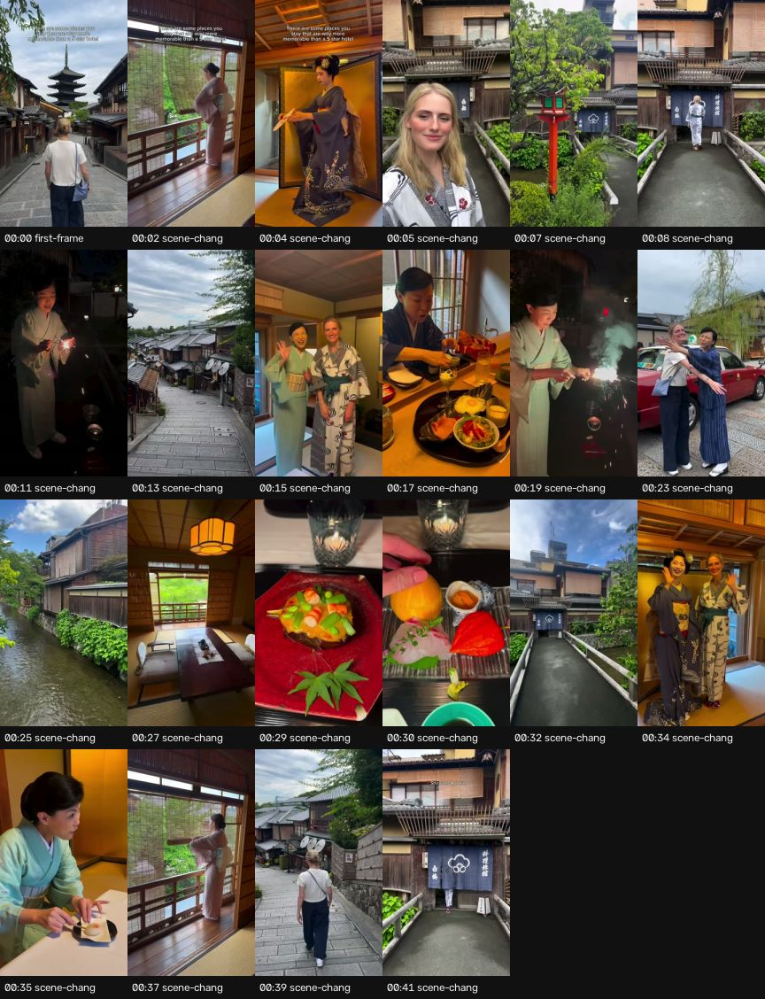
OpenCV · 427구간
자동 후보 22개 · 육안 하드컷 22 · 42.700초 · 1,281프레임.
0.1초 측정 CSV · 컷 후보 · 측정 설정
연출 가설 같은 입구와 길을 한 번 더 보여주면 첫 방문에서 다시 돌아가는 감각이 생길 수 있다. 소스의 얼굴 컷 대신 성인 여행자 뒷모습과 음식·손 디테일을 활용한다.
보관 조회 108,164회 · 원본 게시 2026-06-05T06:28:40+09:00 · 원본 확인 2026-11-22T18:52:43+09:00 · DZDFD27onPn
Watch · 18장
0.0초부터 도로와 고산 전경, 1.5초 지도 삽입, 3.0–6.0초 나뭇가지 사이 호수, 7.5–10.5초 암봉과 호수, 12–17초 숲길·초지·능선. 일자별 자막이 바뀌며 여러 장소를 연결한다. 자동 후보 17개 앞뒤를 실제 프레임으로 확인했다.
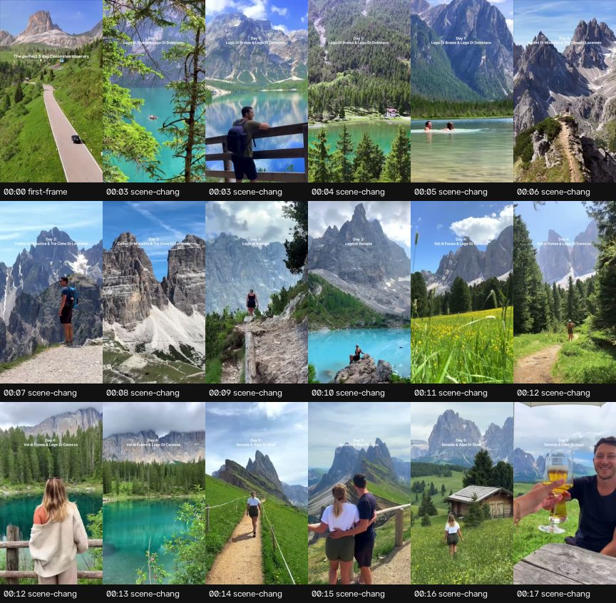
OpenCV · 181구간
자동 후보 17개 · 육안 하드컷 17 · 18.066초 · 542프레임.
0.1초 측정 CSV · 컷 후보 · 측정 설정
연출 가설 근접한 나뭇가지와 산수 와이드가 교차하는 구성은 시야가 열린다는 느낌을 줄 수 있다.
보관 조회 106,162회 · 원본 게시 2025-04-09T21:26:14+09:00 · 원본 확인 2026-11-22T18:52:43+09:00 · DIOcouJNiBI
Watch · 22장
0.0초 라우터브루넨 계곡과 인물, 6.6초 열차에서 창으로 산과 초지, 13.2초 마을과 폭포, 26.4초 광량 변화, 39.6초 철로 소실점, 59.4초 설산 지명, 72.6초 높은 호수 전망. 지명·가격·교통 자막과 인물 설명 장면이 섞인다.
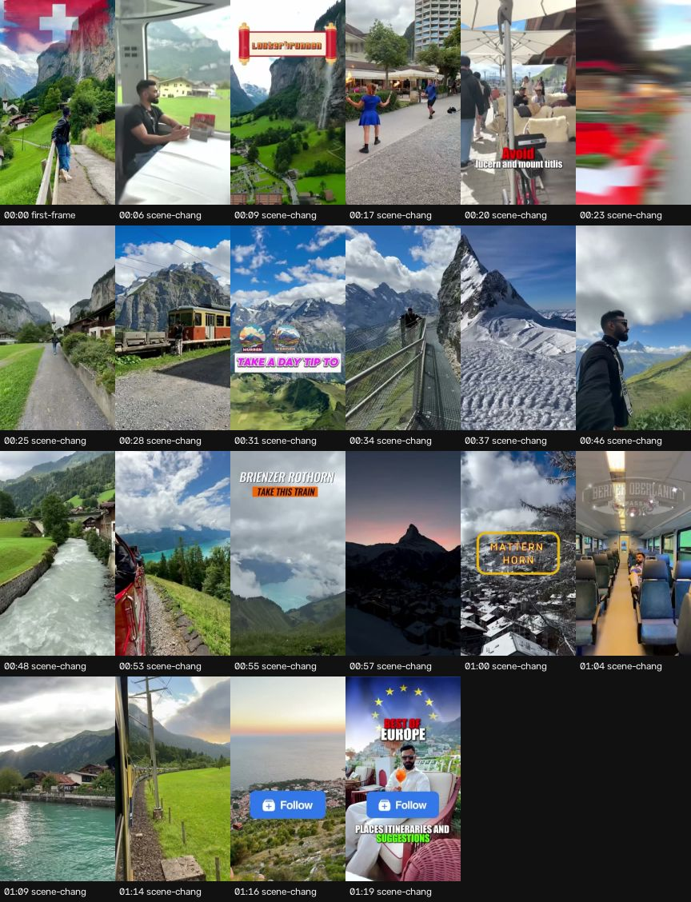
OpenCV · 801구간
자동 후보 46개 · 육안 하드컷 미확정 · 80.066초 · 2,402프레임.
0.1초 측정 CSV · 컷 후보 · 측정 설정
연출 가설 시선이 지나가는 길과 접근하는 원경을 초반에 함께 두면 여행 순서를 짧게 압축할 수 있다.
보관 조회 104,430회 · 원본 게시 2025-05-27T01:56:01+09:00 · 원본 확인 2026-11-22T18:52:43+09:00 · DKH87rite5f
Watch · 19장
16개 후보 모두 직전·직후 확인. 0.000초 붉은 다리 → 0.900 계단 → 1.733 터널 → 2.800 복도 → 3.633 김 서린 실내탕 → 4.600 나무와 돌이 보이는 야외탕. 5.333, 7.567은 문을 여는 시점, 9.367 창가 욕조, 10.233 식사, 14.700 조명 외관. 하단 안내문이 바뀐다.
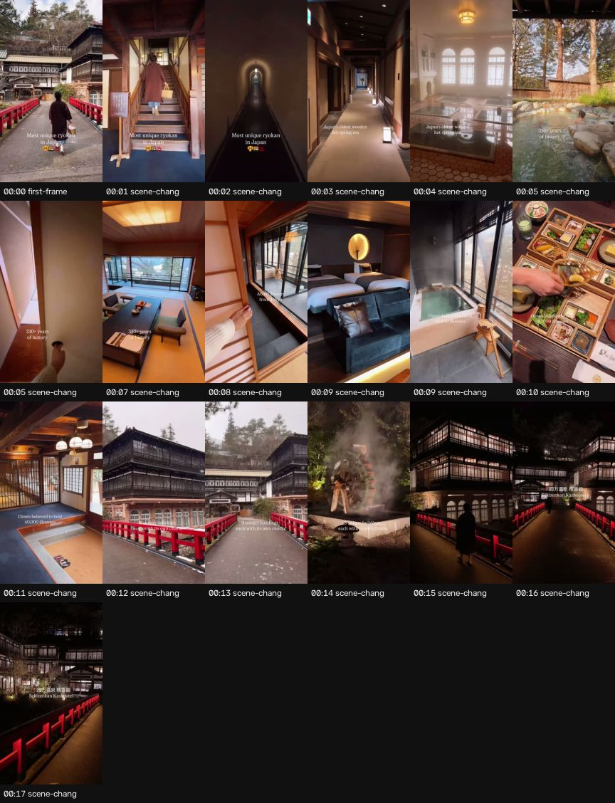
OpenCV · 170구간
자동 후보 16개 · 육안 하드컷 16 · 16.966초 · 509프레임.
0.1초 측정 CSV · 컷 후보 · 측정 설정
연출 가설 다리·복도·문이 만드는 진입 방향을 이어 주고, 물이나 김 너머에 목적지를 공개하면 시점 차이가 자연스럽다.
보관 조회 102,881회 · 원본 게시 2026-04-23T07:51:13+09:00 · 원본 확인 2026-11-22T18:52:43+09:00 · DXZc-2LEtcm
Watch · 18장
17개 후보 모두 불연속 전환 확인. 1.767 도시와 물, 3.067 능선 위 시야, 4.133 넓은 계곡, 5.000 카트 내리막, 5.833 절벽, 6.700 호수, 10.167 계곡길 자전거, 11.000 물 디테일, 12.733 높은 시점의 청록 호수. 일정 문구가 구간별로 바뀐다. 실제 코스·호텔 기하를 확정하는 근거는 별도 공식 자료가 필요하다.
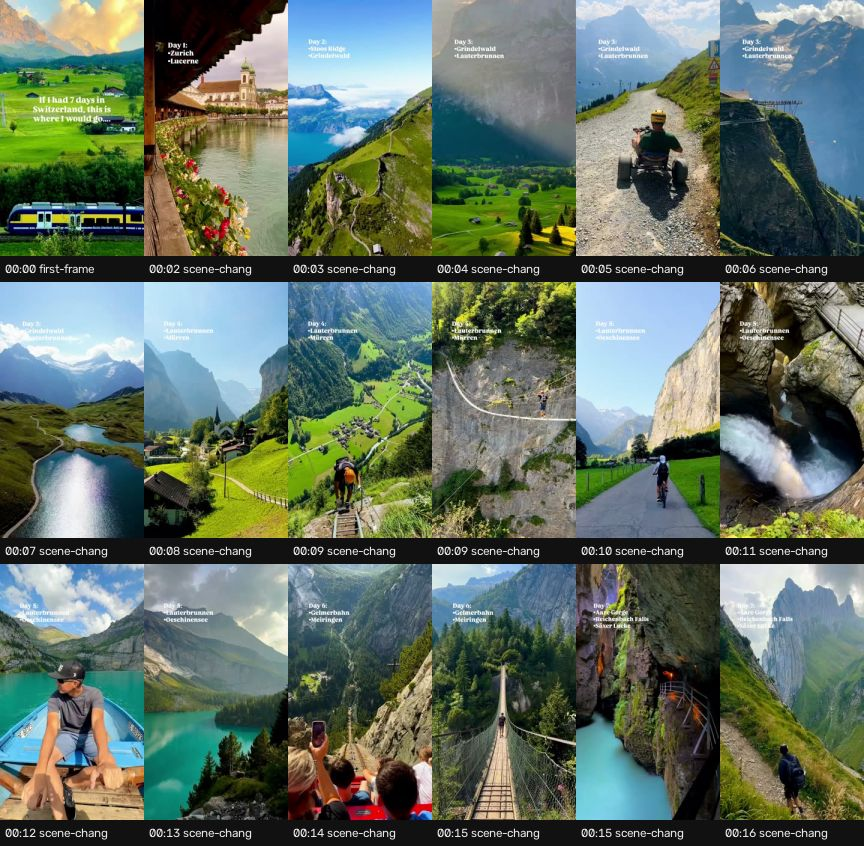
OpenCV · 174구간
자동 후보 17개 · 육안 하드컷 17 · 17.366초 · 521프레임.
0.1초 측정 CSV · 컷 후보 · 측정 설정
연출 가설 5.000의 가까운 자갈·능선 대비와 5.833 이후 넓어지는 시야의 차이를 고산 이동 훅으로 전환할 수 있다.
보관 조회 76,689회 · 원본 게시 2024-12-17T10:33:58+09:00 · 원본 확인 2026-11-22T18:52:43+09:00 · DDqUMaLME_3
Watch · 22장
0초 흐린 밝은 시작, 2.1초 꽃과 스위스 계곡, 6.3–10.5초 미끄럼틀·그네·망원경, 18.9초 수면, 21.0초 실내 풀, 25.2초 창 너머 빨간 다리. 강조색 발화 자막이 보인다. 자동 후보 17개 앞뒤를 실제 프레임으로 확인했다.
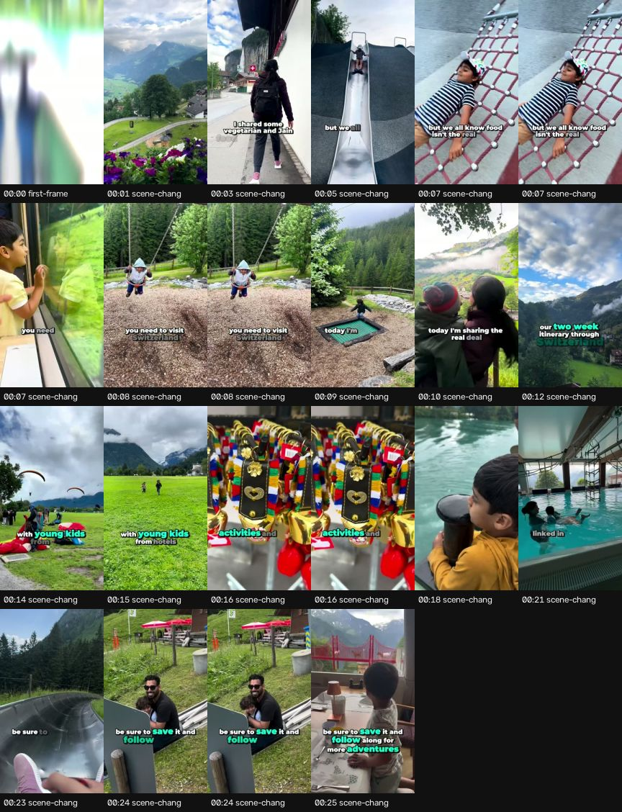
OpenCV · 262구간
자동 후보 17개 · 육안 하드컷 17 · 26.133초 · 784프레임.
0.1초 측정 CSV · 컷 후보 · 측정 설정
연출 가설 거리와 높이가 읽히는 체험 쇼트 다음에 조용한 수면을 두면 활동과 휴식이 한 여행 안에서 대비된다.
보관 조회 65,800회 · 원본 게시 2025-12-24T19:01:42+09:00 · 원본 확인 2026-11-22T18:52:43+09:00 · DSpF_jKEr70
Watch · 22장
0.0초 테마파크 입구와 셀피, 14.0초 공항에서 Day 1 문구, 21.0초 호텔 외관, 28.0초 실내, 35.0초 천장 장식, 42.0초 식사, 63.0초 공연, 77.0초 도시 도로, 84.0초 노란 여행·예약 문구. 개인 일정 설명으로 호텔 특정 시설의 연속 탐색은 짧다.
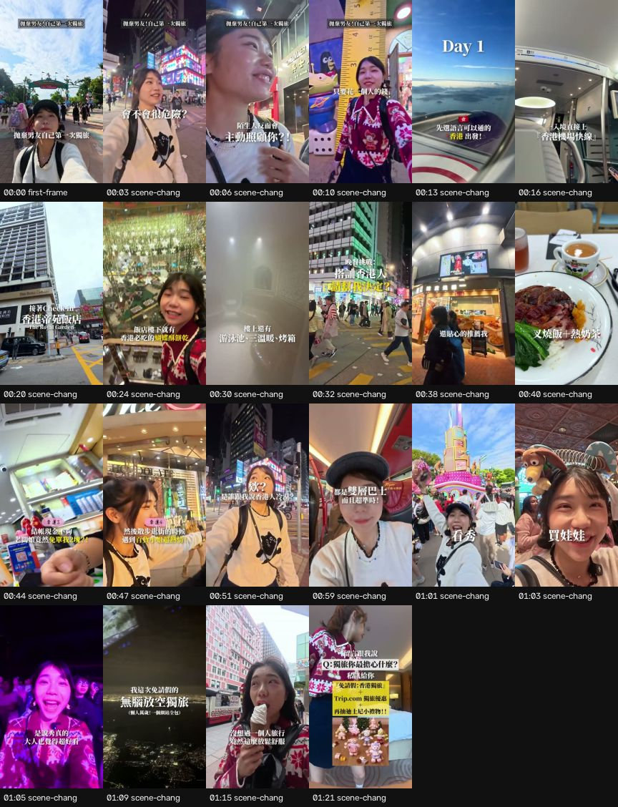
OpenCV · 850구간
자동 후보 69개 · 육안 하드컷 미확정 · 84.985초 · 2,547프레임.
0.1초 측정 CSV · 컷 후보 · 측정 설정
연출 가설 여행 전체를 하나의 일정으로 묶는 문구가 여러 장소를 연결하지만, 숙소 풍경 중심 편집에서는 객실 동선과 전망이 더 중요하다.
보관 조회 63,636회 · 원본 게시 2025-08-02T23:00:49+09:00 · 원본 확인 2026-11-22T18:52:43+09:00 · DM2u1gDt2_x
Watch · 22장
0.0초 산악 와이드와 좌하단 진행자 합성. 13.9초 숲이 보이는 실내, 41.7초 창과 식당, 83.4초 호텔 외관, 97.3초 창 전망, 125.1초 푸른 풀, 139.0초 어두운 휴식 공간, 152.9초 큰 창으로 돌아온다. 안내문과 발화 자막이 보인다.
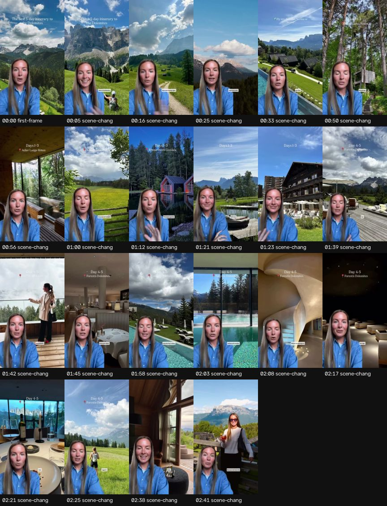
OpenCV · 1670구간
자동 후보 28개 · 육안 하드컷 미확정 · 167.000초 · 5,010프레임.
0.1초 측정 CSV · 컷 후보 · 측정 설정
연출 가설 큰 창과 물 표면을 배치하면 숙소의 전망이 읽히지만, 영상의 교육형 인물 합성과 실제 시설 판단은 분리한다.
보관 조회 51,335회 · 원본 게시 2026-02-22T01:02:16+09:00 · 원본 확인 2026-11-22T18:52:43+09:00 · DVBqCaoCOof
Watch · 16장
15개 자동 후보 좌→중 실제 소재 전환 확인. 0.0초 잎처럼 겹친 지붕 항공 와이드, 0.700 수면과 건물, 1.400 대나무 외관, 2.833 항공, 3.700 다리 위 뒷모습, 4.933 대나무 사이 푸른 물, 5.633 돌과 아치, 7.000 식사 공간, 9.833 다리, 10.533 처음의 고도·방향으로 돌아간다. 약 0.5–0.9초 간격의 짧은 컷과 두 종류 중앙 문구가 보인다.
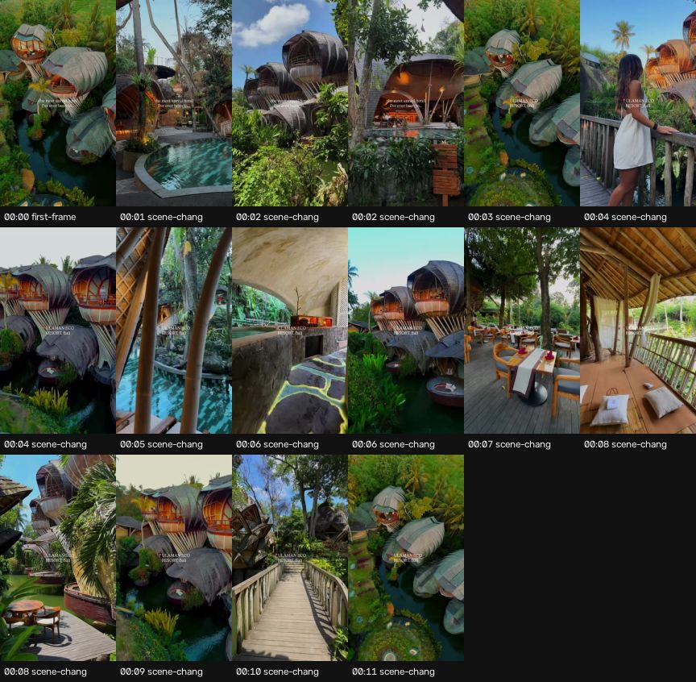
OpenCV · 112구간
자동 후보 15개 · 육안 하드컷 15 · 11.133초 · 334프레임.
0.1초 측정 CSV · 컷 후보 · 측정 설정
연출 가설 처음과 마지막에 지붕 실루엣과 물길 방향을 반복하면 빠른 내부 컷을 하나의 장소로 묶을 수 있다.